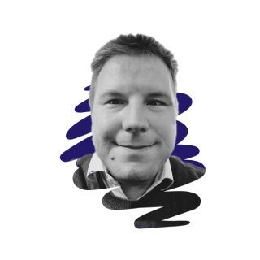

|  |
Jake Lillethorup MahsFounder and CEO of Czarlight inc. I might be a laywer by education, but I am an artist and entrepreneur by ❤ Contact information |
| #Ledership | ⭐⭐⭐⭐⭐ | #Human Ressource development | ⭐⭐⭐⭐ | #Web development (HTML, CSS, JavaScript) | ⭐⭐ |
| #Communication | ⭐⭐⭐⭐⭐ | #Public Procurement | ⭐⭐⭐⭐ | #App development (React Native) | ⭐⭐ |
| #Public Affairs | ⭐⭐⭐⭐ | #Information- and Cyber Security | ⭐⭐⭐⭐⭐ | Ethical Hacking (White hat and Red Hat) | ⭐⭐ |
| #legal Affairs | ⭐⭐⭐⭐⭐ | #Data protection and privacy | ⭐⭐⭐⭐⭐ | Coaching (Individual and team coaching) | ⭐⭐⭐⭐ |
| Dates | Work | reference |
|---|---|---|
| 2019- | Founder and CEO | Czarlight inc., Denmark |
| 2019- | Chief consultant and teamleader, Cyber Security Devision | The Mancipality of Kerteminde, Denmark |
| 2019- | Independent Consultant | Jama Consult, Denmark |
| 2017-2019 | Cheif consultant and Data Protection Officer (DPO), The Office of Internal Affairs | Ministry of Foreign Affairs of Denmark, Denmark |
| 2015-2017 | Co-founder and CEO | HeltLokalt ApS, Denmark |
| 2014-2017 | Consultant and interim teamleader, Finance, Public Procurement and Insurance Office | The Mancipality of Guldborgsund, Denmark |
| 2012-2014 | IT Legal Manager, IT and Legal Services | ScanJour A/S, Denmark |
| 2012-2012 | Assistant Procedutor, The Local Procedurtion Office (SZLF) | Local Procecutors Office of Southern Zealand and Lolland-Falster, Denmark |
| 2011-2012 | Clerk, at the Human Rights Devision | Ministry of Foreign Affairs of Denmark, Denmark |
| Dates | Education | reference |
|---|---|---|
| 2014-2017 | DIL - Diploma in Leadership | DTU - The Technical Unioversity of Denmark,Denmark |
| 2009-2011 | LL.M. - Master of Laws | SDU - University of Southern Denmark, Denmark |
| 2009 | Exchange Student Program - Russian and International Law and Politics | PetrSU - Petrozavodsk State University, Russia |
| 2007-2009 | Bachor level degree in single subject - Russian Language, Culture and History | SDU - University of Southern Denmark, Denmark |
| 2006-2009 | LL.B. - Bachelor of Laws | SDU - University of Southern Denmark, Denmark |
| 2004-2006 | High School/Secoundary Education | OK - Odense Katedralskole, Denmark |
| 2003 | Technology and Communication | NEXT Education Copenhagen - formaly known as: KTS - Technical School of Copenhagen, Denmark |
| Dates | Education/Course | reference |
|---|---|---|
| 2022 | Web Development Vootcamp | The App Brewery, Online |
| 2022 | Human Ressource Management | Mannaz A/S, Denmark |
| 2021-2022 | Systemic Coach - EMCC - Professional and Certified Coaching | Mannaz A/S, Denmark |
| 2020-2021 | The Communication Education - Strategy and Execution | DJØF - Dansk Jurist- og Økonomiforbund, Denmark |
| 2016 | MED Grundudannelsen - Mandetory course in work environment for leaders | PUF colaboration, Denmark |
| 2013 | ITCM - IT Contract Manager | BvHD - bender von Haller Dragsted - now a prt of Bird&Bird, Denmark |
| 2007-2017 | Miscellaneous courses in legal affairs, communication, HR, IT etc. | List of miscellaneous courses, Denmark |
For a list of the most recent and important certifications that I hold, please refer to the certification page below.
My certifications| Dates | Positions |
|---|---|
| 2020- | Staff Representative for DJØF at the Mancipality of Kerteminde |
| 2020- | Mentor for young academics at DJØF |
| 2020- | Parent Representative at class council at Sanderumskolen |
| 2017-2019 | Representative of the Ministry of Foreign Affairs of Denmark to the interm´ministrial workinggroup |
| 2015-2017 | Chair of the legal advisory board of the public Procurement colaboration between the manipalities on Zealand Denmark |
| 20213-2014 | Representative in the coorporation comitte at ScanJour A/S |
| 20213-2014 | Chairman of the board at G. Jackson Entreprise A/S |
| 2007-2013 | Miscellaneous trusted positions at SILBA election observation organisation and the board of Erasmus Student Network (ESN) |